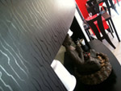
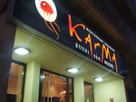
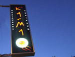
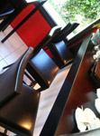
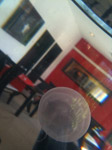
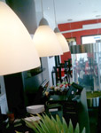

Presentation

Le Karma
Karma signifie littéralement action, le moyen par lequel une personne devient l' architecte de sa propre destinée.
Le cycle de cause à effet, selon la loi du Karma, chaque action humaine en pensée, en mot ou en geste,
engendre inévitablement des conséquences, bonnes ou mauvaises, et dépend de la qualité de l'action.
Le restaurant Le Karma accueil ses clients dans un cadre chic et épuré, une décoration orchestrée
avec une une minutie toute Asiatique.
Mais le spectacle au Karma se trouve dans l'assiette, la vaiselle pourrait être Asiatiques (elle ne l'est pas), tant elle est discrète,
pas de paillettes ni de poudre aux yeux, le plaisir gastronomique est le seul maître au Karma.
  
  